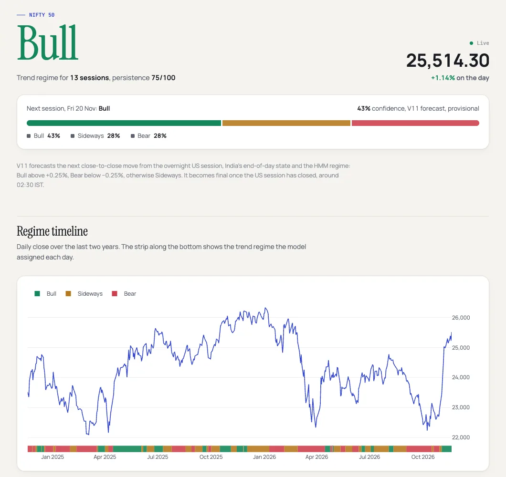
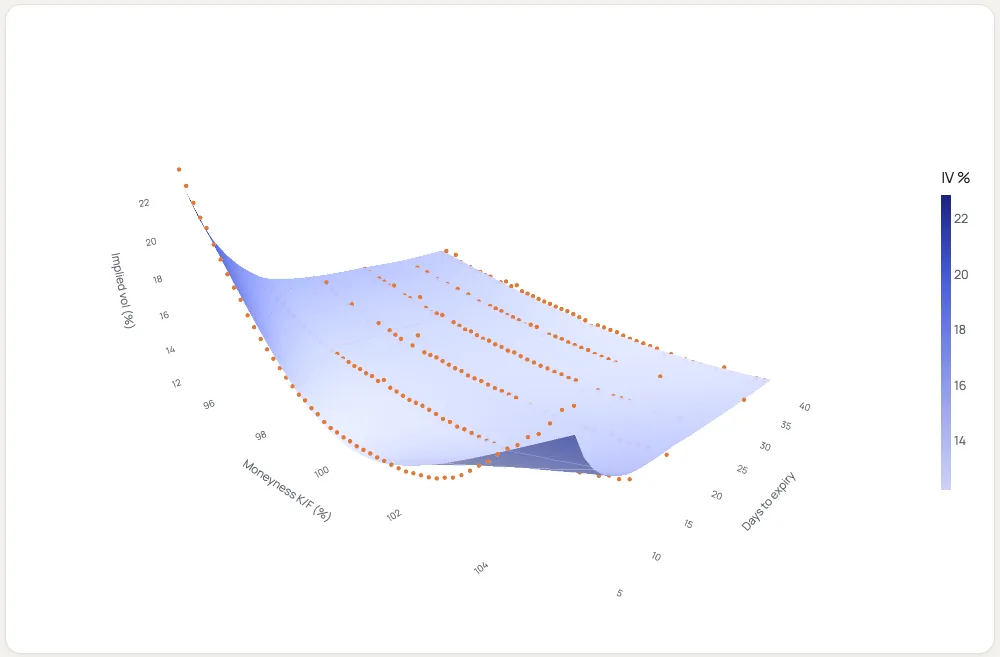
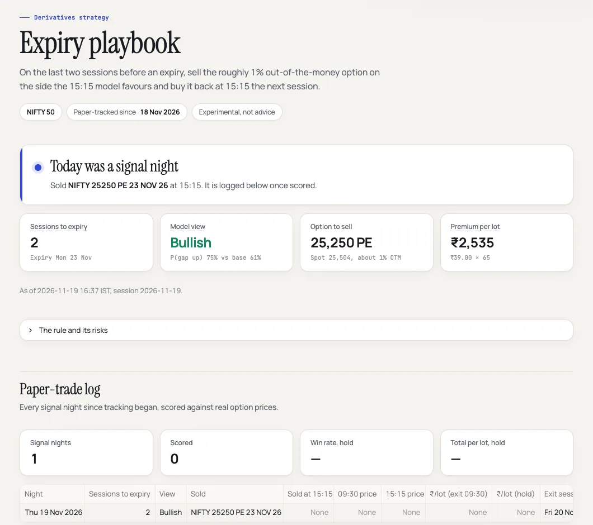
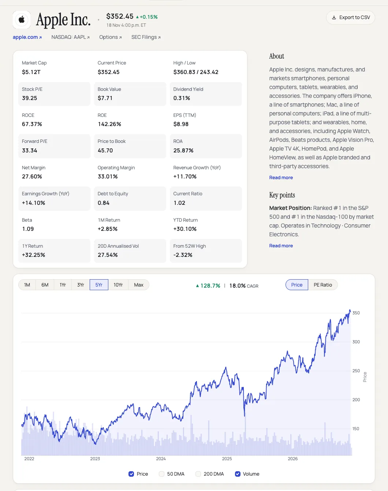

Read the market's regime, not just its price.
QuantOS identifies Bull, Sideways and Bear regimes with a Gaussian Hidden Markov Model, forecasts the next session, builds implied-volatility surfaces calibrated with SVI and SABR, and tests an expiry-week options strategy, for NIFTY 50, BANK NIFTY and SENSEX.
The dashboard is hosted on a free plan. If it has been idle, the first visit takes about 30 seconds to wake up.

Four tools, one dashboard
Scheduled jobs pull market and options data from the Upstox API and run the models. The dashboard only reads their results, so pages load fast and stay consistent.
Which regime are we in, and how long will it last?
A three-state Gaussian HMM over returns, rolling volatility, drawdowns and sector dispersion labels every session and estimates transition probabilities.
- Regime timeline over two years of closes
- Persistence score and expected regime duration
- V11 next-session forecast using the overnight US session
- Prediction log scored against realised closes
Implied volatility across strikes and expiries
Option quotes are converted to implied volatilities and fitted per expiry with SVI and SABR, then joined into a smooth surface by interpolating total variance.
- Interactive 3D surface with market quotes overlaid
- Smiles, ATM term structure, 25Δ risk reversal and butterfly
- Butterfly and calendar no-arbitrage checks

An options strategy, paper-traded in public
On the last two sessions before expiry, sell the roughly 1% out-of-the-money option on the side a 15:15 model favours, and buy it back at 15:15 the next session.
- Tonight's signal, contract and premium per lot
- Paper-trade log scored against real option prices
- Backtest against simpler short-option rules, after costs

Fundamentals and history for 100+ US stocks
The Nasdaq-100 top 50 and S&P 500 top 100: key ratios, returns, price history with moving averages, and quarterly and annual statements.
- Valuation, profitability and risk ratios
- Price and P/E history with CAGR
- Quarterly results, P&L and balance sheet

The engine behind it
A Python package with separate data jobs, models and strategy code, covered by tests and CI.
Regime models
Gaussian HMM on engineered features (returns, rolling volatility, drawdowns, sector dispersion), with transition matrices and walk-forward evaluation.
Volatility
SVI and SABR calibration per expiry, total-variance interpolation, and GARCH(1,1) Student-t forecasting.
Risk
10,000-path Monte Carlo simulations for market-risk scenarios.
Data
Upstox API for Indian index and option-chain data, Yahoo Finance for US equities, Parquet and SQLite storage.
App
Streamlit and Plotly with a custom design system; FastAPI service for model outputs.
Engineering
pandas, NumPy, SciPy, scikit-learn; pytest and ruff in GitHub Actions CI.
QuantOS is a research and portfolio project. Nothing on this site or the dashboard is investment advice.